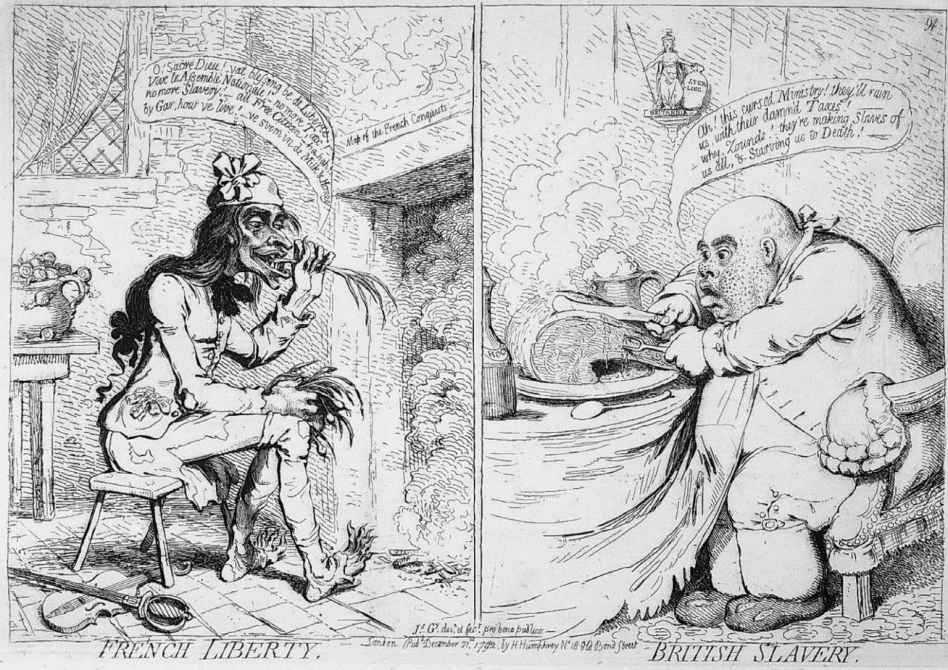
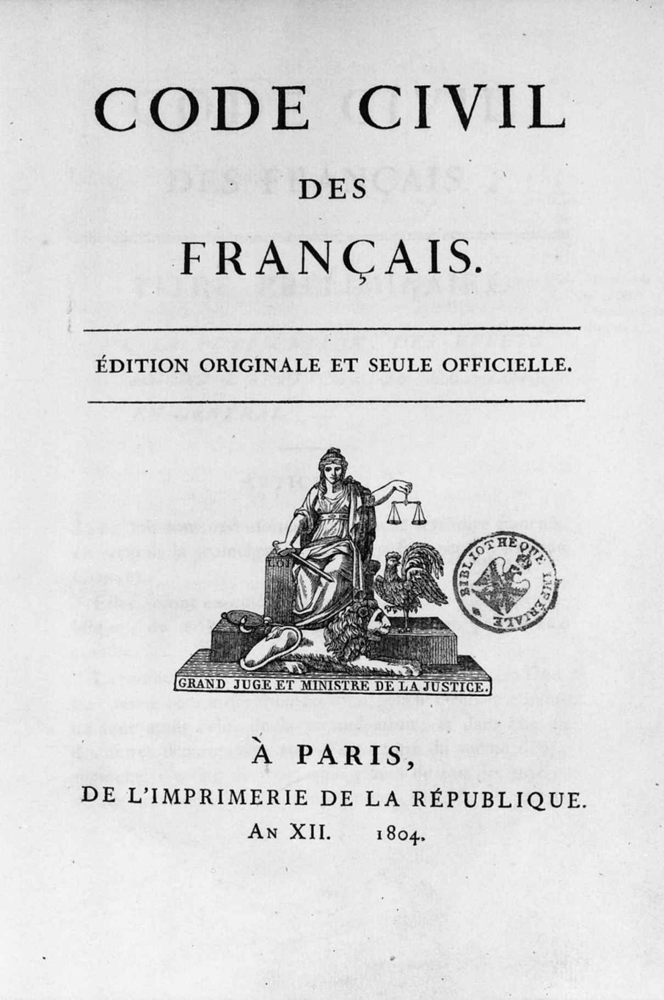

“沃辛先生，”《不可儿戏》中的布莱克奈尔夫人说，“你刚才跟我说的话让我觉得有点困惑。在我看来，在手提包里出生，或至少在那里面被哺育——不管提包有没有把手——是对人生基本尊严的一种蔑视，这让人想起法国大革命中一个最恶劣的极端行为。我想，你知道那场不幸的运动导致了什么后果吧？”
沃辛先生想必是知道的。在19世纪，每个有着不错的基本知识的人，都对18世纪末年那场标志性的大动荡有所了解。维多利亚时代的体面人士可能觉得，自己有义务了解1789年及随后法国所发生的事情及其原因，了解随之而来的混乱是如何以一场延续一代人之久的“大战”才告终结的——这场反拿破仑的战争给其父辈或祖辈的生活打上了烙印。沃辛先生一边啃着黄瓜三明治，一边梦想着迎娶布莱克奈尔夫人的女儿，也许他并没有多大的求知欲。不过，即便是他，也很可能了解法国大革命中最糟糕的极端行为，了解它们如何冒犯了生活的基本尊严。他也可能知道，一场群众起义走向了暴民统治，导致君主制被推翻、贵族受到迫害。他也可能知道，大革命选择的复仇工具是断头台，这种无情的砍头装置致使巴黎的街道上流淌着王党和贵族的鲜血。创造欧内斯特·沃辛先生和布莱克奈尔夫人（她的祖先若是法国人，恐怕也难逃断头台的噩运……）的作者在巴黎的阴暗流亡生活中结束了自己的一生。在巴黎，奥斯卡·王尔德周围布满了第三共和国领导人精心设置的象征物和影像，它们唤起的是对大革命所缔造的第一共和国的记忆。铸币和公共建筑上装饰着“自由、平等、博爱”的标语。每逢庆典，街道上飘扬着红、白、蓝三色的旗帜，这是法兰西民族在1789年采用的三色旗的颜色。每年7月14日的国庆节纪念的是1789年攻占巴士底狱的日子，人民在那一天进攻那座险峻的国家监狱，然后以自由的名义夷平了它。在这公众庆典的时刻，法国的爱国者们高唱《马赛曲》，这是1792年发起反对暴政的战争时出现的颂歌。王尔德在巴黎时，巴黎最壮丽的景观无疑是当时世界上最高的建筑——埃菲尔铁塔，它是1889年大革命一百周年之际一次大型博览会的核心展品。
在法国生活或到访法国的人，不可能不注意到这些回响；或说是拿破仑的回响，他曾在三色旗下踏上征途，曾经驯服并利用了大革命释放的能量，而他的侄子拿破仑三世曾在第三共和国建立之前统治了法国22年。任何人，只要他对法国稍有了解，哪怕只是通过间接渠道了解（要是通过学习法语来了解就更好了，法语当时仍然是大多数人外语学习中的首选），都不能不意识到，那场刚刚走出亲历者记忆的创痛和动荡给这个国家留下的深刻印记。很多人相信，或感觉到，这种印记应该是有益的，某种意义上也是必要的。每个人都知道王后玛丽-安托瓦内特的故事、都为之深感震撼：1793年，王后在群众的欢呼声中走向断头台，而当初她得知人民没有面包时，曾说“那就让他们吃蛋糕吧”。（这个故事仍是家喻户晓，但没人在意，这是个老故事，安托瓦内特出生之前就有了，让——雅克·卢梭早在1740年就听说过。）各个新民族曾以宣告自己的解放为骄傲，或采用三色旗以展望其解放，如1789年布鲁塞尔的爱国者、1796年米兰的爱国者。这一自由的旗帜仍在到处飘扬，从罗马到墨西哥城，从布加勒斯特到都柏林。波兰人先是于1794年高唱《马赛曲》以抵抗对其祖国的瓜分，后来又于1956年唱着《马赛曲》反对苏联的暴政。1789年革命之后，没有几个国家不曾经历过类似的场景，在所有国家，都有人回望那时在法国发生的事件，从中寻求启示、榜样、典范以及警示。
最超脱于这些做法的，是世界各地的英语国家。它们最近的革命发生在1789年之前，只有爱尔兰除外。即便是当时同情法国人的英语国家人士，也认为法国人给1688年在英国、1776年在美国宣告的自由带来了麻烦。不管怎样，这样的同情者终归是少数。对大多数说英语的人来说，其思想态度的模型早在1790年就由埃德蒙·柏克的《法国革命论》铸成了，它的问世比大革命“最糟糕的极端行为”要早好几年。当时有改革派称，法国人进行的只是1688年英国光荣革命、美国人1770年代的反叛（柏克曾是这一事业的支持者）所完成的工作；柏克对这一见解义愤填膺，他坚称法国大革命是某种全新的事物。此前英语世界的历次革命，目的在于保卫自由的遗产免受攻击。而根据这一新的法国标准，这些革命实际上根本不成其为革命，因为法国人要以全面摧毁的方式来建立他们所谓的自由。如果谨慎一点，如果对祖先的智慧怀有一点敬畏，他们本来能够纠正原有制度中少量而轻微的缺陷，并像英国人那样自由而平和地处置问题。但是他们宁愿追随那种未经尝试的理性梦幻、那些自封的“哲人”，这种人掏空了对君主制、对社会秩序和对上帝的信念。结果就是无政府状态和“猪猡大众”充满嫉妒的统治。柏克预言说，随后将出现更糟的局面，需要建立军事独裁才能结束这一切。尽管没有预见到事态发展会如何血腥，他还是正确地估计到最后会是一位将军获胜。因此，柏克既是批评者，又被尊为先知；但是，英国人在处理事务方面对于法国人的优越之处，看来要在他死去18年之后、在滑铁卢的战场上才能得到完全的证实。
但法国人积习难改，1830年，巴黎发生新的革命（尽管为时更短），三色旗再次飘扬。过去的阴影为何萦绕着未来？随着亲自缔造或亲身经历最初的那场灾变的一代人逐渐离世，历史学家开始把它当作分析对象。今天，这些学者大多已经被遗忘，没有被遗忘的那位，在后世的历史学家们那里也没有得到多少敬意。此人就是托马斯·卡莱尔，但在塑造民众关于法国大革命的观念方面，他的影响比任何人都要大。他的《法国大革命史》（1837年）以不可复制的粗犷笔调，描绘了一幅满是愚蠢和报复的混乱画卷。与柏克不同，他没有为革命者所摧毁的旧制度辩护。他认为旧制度是腐败的，其命运乃咎由自取。当廷臣们在装腔作势、饶舌之人在夸夸其谈时，饥肠辘辘的大众已开始思索他们所受的压迫：“难以言表的混乱无处不在，它在内部翻腾，硫黄味从众多的表面裂隙中溢出。”大革命是群众暴力的一场大爆发，人们的怨愤之情可以理解，尽管很难为之辩护。试图指挥或引领这场暴动的人，大部分都是蠢货或恶棍，所有这些人自以为是的做法让人心生怜悯。其中最可怕的人物是罗伯斯庇尔，他试图靠恐怖来统治，此后，在非法国人的脑海中，他被永远定格为“海绿色的不可腐蚀者”（既指他的气色，也指他的权威）。他将受害者一个个送上不归路，最后自己也坐着囚车（tumbril，这个指翻斗小推车的词快要被人忘记了，此后只在这一特殊语境中使用）步他们的后尘。当囚车经过时，“小红帽们发出瘆人的欢呼声”：这里指的是无套裤汉，这些人不穿贵族的齐膝短裤，且以红色的自由帽来张扬其爱国主义。他们，还有他们吵嚷尖叫的女眷，都被发自肺腑的社会复仇欲望驱使着。卡莱尔认为，只有三个人能够疏导这种本能的力量。一个是米拉波，但他于1791年死去，其志未酬。另一个是丹东，1792年他曾凭自己的胆识将法国从外敌入侵的危险中拯救出来，但两年后也被恐怖浪潮席卷而去：“虽然满身缺陷，但他毕竟是个人物；他有火一般的热情，有一种源于自然的伟大的火热胸怀。”［就在卡莱尔写作此书时，格奥尔格·毕希纳正给德国人上演他的《丹东之死》（1835年）；在这部剧作中，相比于那些合谋杀害他的小人，如罗伯斯庇尔之流，丹东太有英雄气概了。］最后一个人是拿破仑，他在1795年把军队带入政治，用“一阵霰弹雨”浇灭了巴黎最后的叛乱。

图2 1790年代，漫画家詹姆斯·吉尔雷从伦敦看到的海峡两边的对比
卡莱尔的文字有别具一格的力度，它给后世留下的关于那段岁月的印象成了司空见惯的常识：没完没了的骚乱，血腥暴虐，无情的“无套裤汉行径”，咆哮愤激的暴民。他的描述具有不可抗拒的戏剧效果。不过，卡莱尔同样关注无辜受难者的悲怆，这些人是人力无法控制的暴力的牺牲品。甚至当罗伯斯庇尔身披他的天蓝色新斗篷、坐在车上辘辘驶向断头台时，作者也流露出些许同情。这本书读来既让人激动，也令人震骇，人们把它当小说读，书也卖得像小说一样好。小说家们欣赏它，这方面没有人比得上查尔斯·狄更斯。
的确，狄更斯在《双城记》（1859年）中刻画的法国大革命形象，对后世人的影响至为深远。这部小说从柏克那里借用了一个基本主题——狂暴、骚动的巴黎与安全、繁荣和宁静的伦敦之间的对比。但是，对狄更斯来说，最明显的指导者和启发者是卡莱尔。他采用了后者关于旧体制的描写：一幅残酷的、压迫性的阴暗画卷，一个“纵情掠夺和压迫”的世界，那里清白无辜的不幸之人，会因权势者一时兴起就被囚禁在阴森险恶的巴士底狱，根本不经过审判而在狱中度过数年；那里的贵族觉得，甩下一枚金币就可以补偿轧死在自己马车轮下的孩子的生命。声誉扫地的掌权者统治着赤贫又悲惨、对社会充满怨恨的人民，其中有位德伐热太太，她一边冷漠固执地忙着手头的编织活儿，一边为复仇到来的时刻筹划着，到时就可以报复欺压她家人的贵族老爷们了。革命爆发，这个时刻终于来了：“‘巴士底！’这吼声听起来像是全法国的呼喊都已凝结在这个令人憎恨的字眼中，人间的海洋随着这咆哮声翻腾，来自深处的浪潮一层层涌起，最后淹没了这座城市。警钟已敲起，鼓已经被捶响，暴怒的大海正在滩头发出雷鸣般的吼叫，攻击开始了。”德伐热太太帮着引领这一攻击：“‘什么！我们可以像男人们一样去杀人……！’随着她一声尖厉而饥渴的呼喊，一伙妇女便聚集到一起，她们的武器五花八门，但她们都是在饥饿与仇恨中拿起武器的。”这样的骚乱持续了好几年，到1792年，断头台成了复仇的工具。德伐热太太和她的复仇伙伴们便围着断头台编织，一针针地计算着死者的数目。法国到处是“头戴红帽和三色徽、佩带民族火枪和马刀的爱国者”，他们阴郁多疑，发自本能地憎恶所有“贵族”。“衣着体面的人应该送进监狱，就像穿劳动服的工人应该去劳动一样。”到1794年初，
虽然法国贵族夏尔·达尔奈逃过劫难，迫害他的德伐热太太也在追究达尔奈之前就被杀了，但在小说的最后，为了满足德伐热太太的复仇欲望，英国律师西德尼·卡尔顿还是自愿牺牲在断头台上。
这些与浓墨重彩、令人心碎的故事交织在一起的形象，为奥斯卡·王尔德那一代人确定了看待法国大革命的标准。对于下一代人，以及整个20世纪，这些形象因为蒙塔古·巴斯托那些不太有才气的文字而更加强化；她很可疑地利用了自己遥远的匈牙利出身，称呼自己为奥希兹女男爵。《红花侠》（1905年）及其续集记录了一个英国纨绔骑士珀西·布莱克尼的故事，此人过着双重的生活，以各种伪装将无辜的贵族从断头台上偷偷带走，送达海峡对岸的安全处所。跟狄更斯相比，她还是有所不同的。巴黎人民仍是“躁动不安、愤懑抱怨的大众，只是名义上的人类，因为有关他们的所见所闻都表明他们一无是处——顶多是些野蛮的受造物，受肮脏的激情、复仇欲和仇恨心理驱使着”；但他们的受害者，“那些贵族……他们所有人，男人、妇女和孩子，因为命运的偶然而成为自十字军以来缔造法国之辉煌的伟大人物的后代”，他们是同情的对象，对于自己祖先的那种传说中的压迫，他们没有任何责任。这段历史纯粹是嗜血的杀戮，这种杀戮欲只是因为“那该死的海绿 [3] ”，以及他勇敢的秘密行动小组而被成功地抵制，抵抗者全都是英国绅士。与卡莱尔和狄更斯不同，奥希兹很少暗示说，旧制度的命运是咎由自取。书中只是为“美丽的巴黎”而叹息，如今它“因为寡妇的哀号、失去父亲的儿童的哭泣而变得面目可憎”。
《红花侠》最初是一部成功的戏剧，在整个20世纪，人们不断对其进行改编和加工，将它搬上舞台和银幕。《双城记》同样如此。这两部作品给古装片带来的效益太丰厚了，以至于出品人无法长时间抗拒。不过，对于追寻革命样本的20世纪的观众来说，现在有了一些更直接的例子。1917年布尔什维克在俄国的革命，立刻被约翰·里德以卡莱尔的风格写入了《震撼世界的十天》（1919年）中，这场革命提供了一个全新的典范。它还被更直接的新媒体——电影——搬上了银幕。随后在德国和中国发生了更多的革命动荡，而在20世纪后半期，无数的其他国家也都经历了革命。在大众的想象中，列宁、斯大林、希特勒这样的人物，已经取代罗伯斯庇尔或丹东，成为革命者的典范。即便是曾经独一无二的断头台恐怖，在犹太大屠杀的毒气室、古拉格有组织的暴行、柬埔寨的屠杀场景之前也已相形见绌。然而，在1917年，很多俄国人自认为，而且人们也普遍相信，他们是在重新开启1789年以后在法国进行的斗争。接下来的革命者，即使不那么自觉地奉法国人为先行者，也都在人民主权学说中寻求合法性，追根溯源，这一诉求是1789年被首次明确表述出来的。很多人，甚至那些声称鄙视尤其为共产主义所崇敬的革命传统的纳粹分子，他们用来庆祝自己权威的仪式和庆典，很容易让人想起1790—1794年首次在法国出现的那些精心安排的大型节庆。
一个被法国大革命的洪流托举起来的人物一直广为人知，他就是拿破仑。他是历史上极少数全世界都知道其不带姓的名字及其相貌，尤其是戴着帽子的相貌的人之一。他的知名度主要来自他作为一位将军而取得的显著功绩。但他的军旅生涯建立在大革命提供的机会之上，而且，当他在一系列的胜利后建立新体制时，他觉得这些体制的运转，理所当然地应依据1789年之后法国所阐发的原则。确实，关于他和革命的法兰西民族如何撕裂欧洲其他地区（大不列颠除外）的记忆，一直萦绕着19世纪。俄国人因为1812年入侵受到的精神创伤尤其严重，尽管是他们（至少是他们的气候）打败了拿破仑。半个世纪后，托尔斯泰将抵抗拿破仑的斗争作为《战争与和平》（1865—1869）的背景。小说中的人物，从沙皇亚历山大往下，都在同一时刻对这位科西嘉篡夺者及其象征的事物感到震惊和憎恶。不管怎样，他改变了所有这些人的生活。拿破仑时代欧洲大陆的所有的居民都可以这样说。甚至在拿破仑离世之后，很多人发现，他们的日常生活仍然受他引入的法律的规范。拿破仑在结束自己的戎马生涯后曾声称，他最持久的光荣不是那些胜利的战役的光荣，而是他的《民法典》。实际上，这部法典是革命时代筹划的，拿破仑只是最终完成了它。但它的影响十分深远，而且不仅限于法国。关于财产持有、转移的一套简单、清晰和统一的原则，对于整个19世纪的德意志大部分地区、1946年之前的波兰和今天的比利时和卢森堡来说，仍然是民法的基础。它的影响仍然渗透于现今意大利、荷兰和德国的法律体系中。公制度量衡取得的成功甚至更为巨大。这套十进制的重量和长度标准于1790—1799年拟定，在拿破仑时代得到热心推广。即使在法国，它的垄断地位的确立也是缓慢的，但在随后的两个世纪，它传播到了世界上的大部分地区。在美国对其让步之后，它迟早将标志着法国大革命开启的诸多潮流和运动之中最彻底的胜利，成为这场革命留下的最完整、最清晰的鲜活遗产。

图3 持久的遗产：《民法典》
“大革命是在实践伟大的事情！”《战争与和平》第一章中的皮埃尔·别祖霍夫高呼道。“‘……抢劫、谋杀和弑君’，……一个带着嘲讽口吻的人插嘴说，‘这些极端行径当然存在，但它们不是最重要的。重要的是人权，是摆脱偏见，是公民权。’”大革命当然是以此为开端的，1789年8月26日，国民议会颁布了一份根本性宣言以指导其工作，这就是《人权和公民权利宣言》。这在世界历史上是全新的东西。英国1689年的《人权法案》宣告的仅仅是英国人的权利。美国的《权利法案》比法国人的要晚一年；法国人的宣言是一篇序言，确定的是宪法的基本原则，15美国人的《权利法案》则是一系列的事后想法，是已然存在的宪法的修正案。1770年代，一些州曾在宪法中以权利宣言为开篇；尽管有这一先例，美国宪法的主要缔造者们并不觉得，一部拟定得当的宪法需要亚历山大·汉密尔顿——制宪会议上的纽约州代表——所称的“格言警句……这些东西出现在伦理学论文中要比出现在政府宪法中好得多”。
人权宣言是抵押给未来的人质：但这正是1789年的法国公民的意愿。既然“不懂、忽视或蔑视人权乃公共不幸和政府腐败之唯一原因”，则宣告“自然的、不可侵犯的、不可让渡的权利……时刻为社会成员所记取”，便可保证“其关注自己的权利和义务”。这一说法提供了一个准绳，所有公民都可依据它来评判政府行为。这里的人权，指的不仅仅是法国人的权利，尽管所有法国公民都应享有这些权利。自由、财产权、安全及反抗压迫；公民平等、法治、良心和言论自由；国民主权及政府对公民负责：所有这些都是被宣示的人权，从其内含的意义上说，它们在任何地方都适用。六年的时间里，法国人两次重写这份权利清单，先是扩展后是限制。拿破仑在其随后的数部宪法中抛弃了它。但是，后来每部宪法的制定者都觉得，无论纳入还是不纳入这样的宣言，都必须做出一个原则性的决定；而所有这样做的人，都在某种情形下回溯到1789年的原初起点。1948年，当初生的联合国决定通过《世界人权宣言》时，其序言以及30个条款中的14条的主要内容，有时甚至是具体字句，都来源于1789年的宣言。还有两条来自更为雄心勃勃的1793年人权宣言，另一条来自更为低调的1795年《权利和义务宣言》。《欧洲人权公约》则在1953年全盘接受了1789年的条款和语言。尽管法国直到1973年还拒绝批准该公约，但在1989年大革命二百周年之际，弗朗索瓦·密特朗总统还是下令应将大革命当作人权的革命来庆祝。
法兰西国民议会
法兰西人民的代表，兹组成国民议会，鉴于不懂、忽视或蔑视人权乃公众不幸和政府腐败之唯一原因，故决定把自然的、不可侵犯的、不可让渡的权利阐明于庄严的宣言之中；本宣言应时刻为社会成员所记取，裨使其关注自己的权利和义务：立法机构之决议、政府之执行权，当其时刻可与政治制度之目标相比照时，应更受尊重：同样，今后公民之要求，若以简单和不可辩驳之原则为指导，应始终以宪法之维护和公共幸福为依归。
基于这些原因，国民议会在上帝面前并在其庇护之下确认并宣布下述人权与公民权利：
1.人生来并且始终是自由的，且在权利方面是平等的。故民事方面的区分，只应基于公共利益。
2.一切政治联合之目标，在于维持自然的、不可侵犯之人权；此等权利包括自由、财产权、安全和抵抗压迫。
3.本质而言，民族是一切主权之源泉；任何个人或任何团体，不得被赋予任何非明确源自民族之权力。
4.政治自由在于可以做任何不损害他人之事的权力。每个人的自然权利之行使不得有任何限制，除非为保障每个他人自由行使相同之权利而必须设置的限制；此类限制只能通过法律来确定。
5.法律所禁止者，仅为危害社会之行为。法律所不禁止者，不应受妨碍；任何人不得被强求去做法律未要求之事。
6.法律是公共意志的表达。所有公民均有权亲自或通过其代表去协助法律之形成。无论是保护还是惩罚，法律对所有人都应一致；法律中人人平等，故任何人都有被选举权，无论时间、地点和职业，所依据者为各自能力之别，除德行和才能之外，不得考虑其他分别。
7.除按法律和法律规定之形式裁决的案件外，任何人不得被控告、逮捕或拘押。凡促动、唆使、执行或令人执行专断之命令者，应受惩罚；任何依法被传唤或扣押之公民，应立即服从，违抗者即违法。
8.法律只应规定绝对的、显而易见的必需的刑罚；除非依据违法行为发生前颁布并合法运用的法律，不得惩罚任何人。
9.任何人在宣告有罪之前，应推定为无罪；当必须进行人身扣留时，任何超出保障其人身安全之必需的严厉行径，均应视为违法。
10.任何人均不得因其见解而受困扰，即使涉及宗教见解，只要其见解之表达不扰乱法律确定之公共秩序。
11.思想和见解之不受约束的交流，是最珍贵的人权之一，任何公民均可自由地发表言论、写作和出版，只要他为法律确定的对此自由之滥用负责。
12.公共强力为确保人权和公民权所必需，该强力为共同体之利益，而非为强力受托者的个人利益而设立。
13.公共捐税为维持公共强力和政府其他开支所必需，它应依据共同体成员之能力在他们之间平等分派。
14.所有公民均有权，或由他自己或通过其代表，就确定公共捐税之必要性、税款之拨付和总额、捐税之核定和期限，自由发表意见。
15.每个社区均有权要求其任何代理人就他们的行为进行汇报。
16.任何社区，若无分权、若权利尚无保障，应制定宪法。
17.财产权神圣不可侵犯，任何人不得被剥夺该权利，除非在明显的、法律证实的有公共需求的情形下，且应以事先进行公正之补偿为条件。
——托马斯·潘恩从法文译为英文，收入其抨击柏克的著名檄文《论人权》（1791年）
这个愿望有些徒劳。英国人决心破坏法国人的派对，他们总是这样。英国王室拒绝出席一场弑君革命的任何庆祝活动。玛格丽特·撒切尔宣称，人权是英国的发明，并赠给密特朗一本装帧华丽的《双城记》。一位在美国工作的英国历史学家写了一本大部头的大革命编年史，书中论证说，大革命的真正本质在于暴力和屠杀（《公民》，作者西蒙·沙马）。在柏克、卡莱尔、狄更斯和奥希兹显然没有白白辛劳的地方，这部著作成了畅销书。不过即便在法国，庆祝活动也存在激烈争吵。人权宣言第一次发布时，离恐怖还有四年多，断头台甚至还没有被发明出来，但是在回首大革命时，很少有人能轻松地视之为一段单一的、连续性的故事，无论是好是坏。在左派看来，恐怖是一种残酷的必要，因为自由和人权的敌人决心将它们绞杀在襁褓中，恐怖不可避免。在右派看来，大革命从一开始就是残暴的，因为它旨在摧毁对于秩序和宗教的敬畏。有些人论证说，革命合乎逻辑的高潮不仅是恐怖，还有在叛乱的旺代省发生的种族灭绝式的屠杀。与此同时，对于这场导致基督教蒙受历史上首次攻击的革命，很多天主教教士诅咒对它的任何庆祝活动，他们的用词两个世纪来鲜有变化。然而，密特朗很享受这样的庆祝。他以特有的恶意评论说，大革命“依然为人恐惧，这恰恰使我更想庆祝它”。
一个世纪前，法国大革命的观念曾让布莱克奈尔夫人颤抖，一个世纪后，对于“那场不幸的运动”导致的结果，人们的看法依然存在深刻的分歧。每个人都认为他们了解大革命，很少有别的、已超出当代记忆范畴的历史事件还能引起此等狂热的赞美或憎恶。这是因为，我们今天诸多的制度、习惯、立场和惯性思维，仍然可以追溯到当初我们认为正确或错误的事物。更多关于历史事件的知识，并不必然改变人们的看法。不过，还是可以为判断提供一个更为可靠的基础，这总比漫无目的地堆积只言片语和简单印象要好，大多数人今天依然依靠这类东西来满足他们对于这一现代史的十字路口的好奇心。